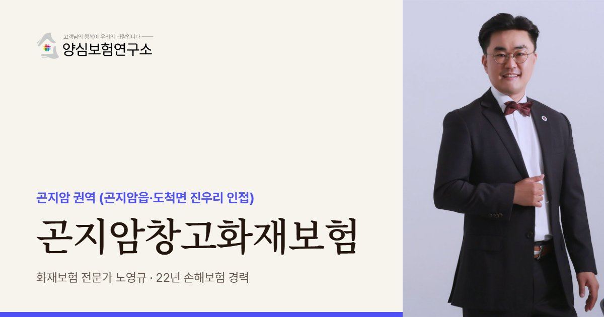

곤지암창고화재보험은 곤지암IC 주변 창고의 분류 설비와 체류 화물, 임대창고 이용자에 대한 책임을 화재에 대비하는 보험입니다. 물건이 빠르게 흐르는 택배 분류 센터는 평균이 아닌 피크 시간 체류 물량과 설비 가액이 설계 기준입니다.
곤지암창고화재보험 보장 항목
- 분류 설비: 수백 미터 이어진 택배 분류기·컨베이어(모터 과열·마찰 화재 때 설비 전체 정지)
- 피크 체류 화물: 분류가 몰리는 시간에 평소의 몇 배로 쌓이는 진우리 센터 체류 화물
- 임대 칸 배상: 컨테이너·소형 임대창고 운영자의 관리 잘못으로 탄 이용자 이사 짐·계절 재고
- 스프링클러 누수: 내륙 산간 겨울 동파로 터진 스프링클러 배관의 물 피해(관련 담보 확인)
곤지암창고화재보험 보험료 산정 기준과 가입 시 고려사항
- 피크 처리량: 하루 처리량과 가장 붐비는 시간대 체류 물량을 기준으로 한 가입금액
- 설비 교체 기간: 컨베이어·분류기 구입가와 교체 기간, 연결된 지역 배송망 복구 기간
- 이용 약관: 임대 칸 이용자 물건 손해 때 운영자 책임 범위를 밝힌 이용 약관
- 동파·무인 감시: 겨울 전 배관 보온 조치와 사진, 무인 임대창고의 CCTV·출입 기록

곤지암 권역은 택배 분류처럼 물건이 머물지 않고 빠르게 흐르는 창고가 많아, 노영규 대표는 하루 처리량과 가장 붐비는 시간대의 체류 물량부터 묻습니다.
곤지암 안내
곤지암, 왜 창고화재보험이 중요할까요?
곤지암창고화재보험은 경기도 광주시 곤지암읍과 그 옆 도척면 진우리 일대, 곧 곤지암IC 주변 창고가 대형 분류 설비와 쌓인 화물, 임대창고 이용자에 대한 책임을 불에 대비해 정리하는 보험으로 봅니다. 곤지암은 물류센터 이름에 자주 쓰일 만큼 수도권 동남부의 대표 물류 지명이 됐습니다.
행정구역으로는 곤지암읍이지만 '곤지암 물류센터'로 불리는 곳 중에는 도척면 진우리에 있는 곳도 많습니다. 2015년 진우리에 준공된 연면적 약 6.4만㎡ 상온 센터가 곤지암이라는 이름을 달고 있고, 광주유통단지 안에서 전층 접안이 되는 창고로 알려져 있습니다.
이 권역의 성격은 흐름입니다. 대형 택배 분류 센터와 자동화 설비가 들어선 곳은 물건이 오래 머물지 않지만, 분류기와 컨베이어가 길게 이어져 있고 하루 중 특정 시간에 물량이 한꺼번에 몰립니다. 설비 가액과 시간대별 체류 물량이 보험 설계의 기준이 됩니다. 분류 설비가 멈추면 연결된 지역 배송망 전체가 늦어지므로 복구 기간도 함께 따집니다.
큰 센터 사이사이에는 컨테이너 창고나 소형 임대창고도 많습니다. 여러 사람이 칸을 나눠 물건을 맡기는 구조라, 운영자는 이용자 물건에 대한 책임을, 이용자는 내 물건을 스스로 지킬 방법을 각각 챙겨야 합니다. 이사 짐, 계절 재고, 소상공인 물품처럼 맡기는 물건도 제각각입니다.
주요 위험
곤지암 택배 분류센터는 어떤 화재 위험을 먼저 보나요?
긴 분류 컨베이어
수백 미터 이어진 분류기는 모터 과열이나 마찰로 불이 나면 설비 전체가 멈춥니다.
시간대별 물량 쏠림
분류가 몰리는 시간에는 체류 화물이 평소의 몇 배가 되어 손해가 커집니다.
소형 임대창고 칸
칸마다 이용자가 달라 무엇이 들어 있는지 운영자가 모르는 경우가 많습니다.
출입 관리
무인 운영 임대창고는 도난과 방화를 함께 대비해야 합니다.
겨울 동파
내륙 산간이라 겨울이 추워 스프링클러 배관이 얼면 정작 불날 때 작동하지 않을 수 있습니다.
IC 주변 차량 혼잡
택배 간선차가 한꺼번에 몰리면 도크 주변 차량 화재가 번지기 쉽습니다.
※ 실제 보장 여부와 한도, 면책 사항은 가입하는 상품의 약관과 창고 현황에 따라 달라집니다.
방문 상담
곤지암 직접 방문 상담
곤지암읍과 도척면 진우리 대형 센터, IC 주변 컨테이너 창고까지 찾아가 분류 설비 길이, 동파 방지 조치, 임대 칸 운영 방식을 살펴봅니다.
꼭 확인할 점검 항목
곤지암 창고화재보험 가입 전 무엇을 점검하나요?
- 하루 처리량과 피크 시간가장 붐비는 시간의 체류 물량으로 금액을 정합니다.
- 분류 설비 가액컨베이어와 분류기의 구입가와 교체 기간을 적습니다.
- 임대 칸 이용 약관이용자 물건 손해 때 운영자 책임 범위를 약관에 밝힙니다.
- 배관 보온 상태겨울철 스프링클러 배관 동파 방지 조치를 확인합니다.
- 무인 시간 감시CCTV와 출입 기록이 남는지 봅니다.
고객 후기
실제 계약고객 만족 사례


※ 실제 계약고객과 나눈 카카오톡 상담과 후기 일부이며, 개인정보는 가렸습니다.
지역 상담 Q&A
곤지암창고화재보험 Q&A
곤지암 컨테이너 임대창고를 운영하는데 이용자 물건도 책임져야 하나요?
약관과 관리 상태에 따라 책임을 질 수 있습니다. 운영자의 관리 잘못으로 생긴 손해에 대비하는 배상책임을 두고, 이용 약관에 책임 범위를 분명히 적어 두는 편이 좋습니다.
임대창고에 맡긴 내 짐이 타면 운영자가 다 물어주나요?
그렇지 않은 경우가 많습니다. 운영자 책임이 없는 불이면 이용자가 스스로 대비해야 하므로, 값나가는 물건이라면 내 동산을 따로 보험에 드는 방법을 봅니다.
택배 분류센터처럼 물건이 금방 빠지는 곳도 재고 금액을 잡아야 하나요?
잡아야 합니다. 평균은 적어도 피크 시간에는 체류 화물이 크게 늘어나므로, 그 시간을 기준으로 금액을 정해야 보상 때 모자라지 않습니다.
겨울에 배관이 얼어 스프링클러가 터졌다면 어떻게 되나요?
물 피해는 화재와 다른 사고라 기본 화재 담보로는 부족할 수 있습니다. 스프링클러 누수를 다루는 담보가 있는지 확인하고, 동파 방지 기록을 남겨 두는 것이 좋습니다. 겨울 전 배관 보온 점검 사진도 도움이 됩니다.
곤지암 IC 주변 도크의 차량 화재도 살펴봐야 하나요?
택배 간선차가 한꺼번에 몰리면 도크 주변 차량 화재가 번지기 쉬워 함께 봅니다. 간선차가 몰리는 시간대와 도크 주변 적재 상태를 알려 주시면 배상 한도를 가늠하기 쉽습니다.